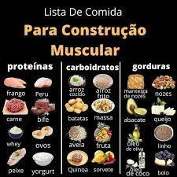

Bela Forma
Uma rotina de treinos que gera resultados de fato tem significados diferentes para pessoas diferentes -afinal,as razões para praticar exercícios nem é a mesma. Talvez você só queira manter seu corpo saudável e reduzir o seu risco de doenças.Ou talves tenha uma objetivo especifico, como completar uma prova de corrida, perder peso ou construir músculos.

Desafie seu corpo todos os dias. Um dia você vai perceber que a academia não transforma só o seu corpo, mas também a sua vida. Treine com frequência e você descobrirá que é muito mais forte do que imagina.
Aqui na Bela Forma você encontrará muito foco, progresso, dedicação e inspiração , todos nós estaremos sempre a sua disposição. Ganhe músculos treinando pesado na Bela Forma, a academia que deixa seu treino completo. Sem desculpa para não treinar. Chame seu amigo e venham levantar peso juntos. Comece a treinar hoje. Treinos personalizados. Sempre uma por perto. Mais de 100 unidades Além de toda nossa estrutura na área fitness, agora, você tem a possibilidade de usufruir do que há de mais avançado na medicina desportiva e musculação terapêutica Um conjunto de processos e técnicas que proporcionam formas mais seguras e eficazes e prescrever e monitorar seus exercícios, melhorando sua qualidade de vida, saúde e, consequentemente, o equilíbrio do seu bem-estar.
Principais produtos que se destacarão internacionalmente
O mercado de alimentos saudáveis pode ser uma excelente escolha para a inserção de marcas brasileiras no exterior, entretanto, é um nicho repleto de especificidades que podem ser determinantes para o sucesso do produto. Os produtos "livres de", ou seja, que não contém ingredientes como lactose ou glúten, há tempos já deixaram de ser consumidos apenas por pessoas com algum tipo de intolerância alimentar e ganharam a atenção do público geral. Curiosamente, de acordo com Jared Tanna, analista cultural da Canvas8, o sucesso dos alimentos "livres de" não tem a ver apenas com os ingredientes que eles não contém, mas também com os aspectos benéficos de seus ingredientes alternativos, que despertam a atenção dos consumidores. Logo abaixo estarão aluguns alimentos a serem consumidos para ganho de massa, sem ouver qualquer um tipo de gordura.
